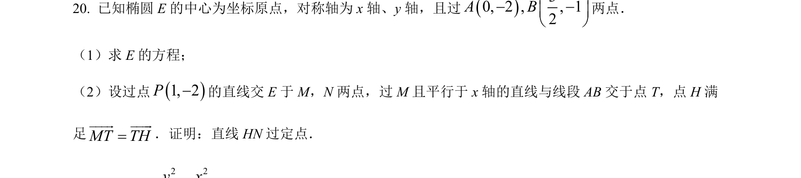
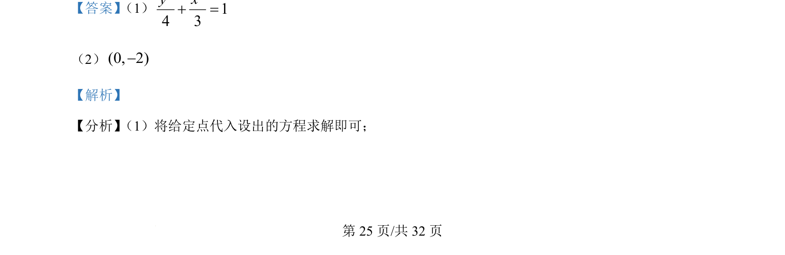
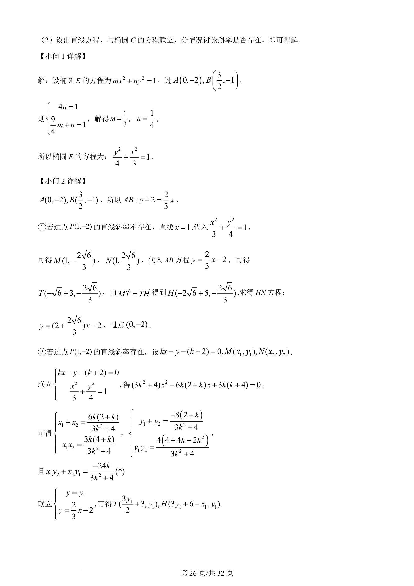
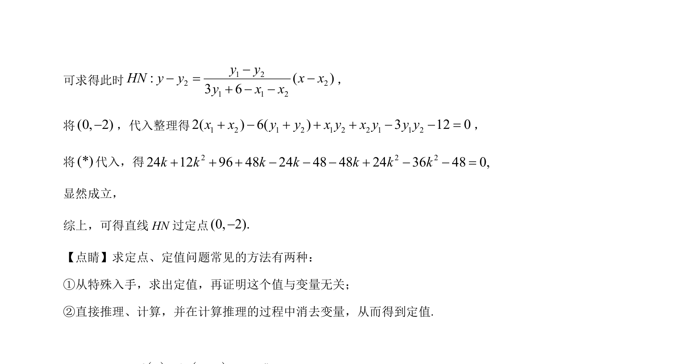

考点：椭圆标准方程 直线与椭圆的位置关系 分类讨论

求椭圆标准方程，并讨论直线与椭圆相交问题，含斜率存在性分类讨论



📄 原 PDF 第 25 页：
素材/真题/吉林/2008-2024·（吉林）数学高考真题/2022年高考数学试卷（理）（全国乙卷）（解析卷）.pdf
【答案】 （1）
2 214 3y x+ =
（2）(0, 2)-
【解析】
【分析】 （1）将给定点代入设出的方程求解即可；